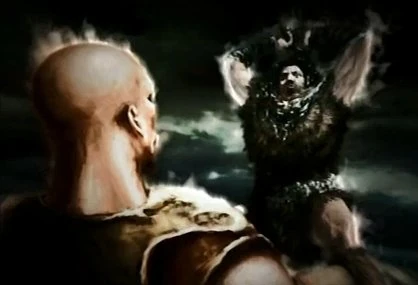
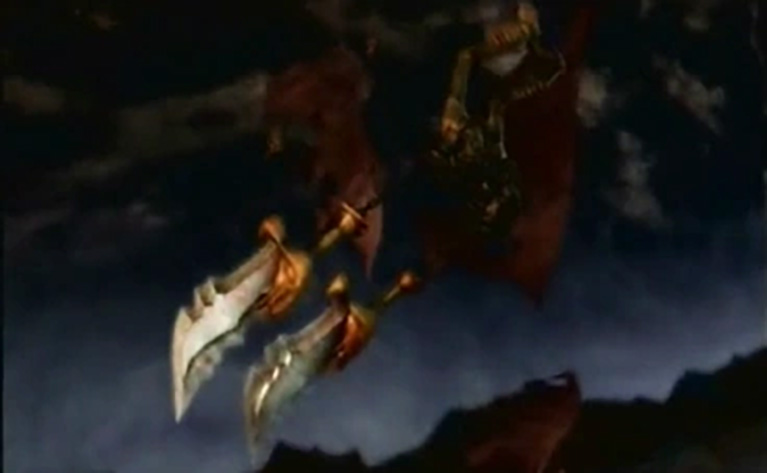

Introduccíon
GOD OF WAR
INTRODUCCIÓN
La saga God of War es una historia inspirada en la mitología griega que narra la vida de Kratos, un guerrero espartano marcado por la tragedia, la violencia y la traición de los dioses.
Desde el inicio, su historia no es la de un héroe tradicional, sino la de un hombre roto por sus decisiones y manipulado por fuerzas superiores. A lo largo de la trilogía, Kratos pasa de ser un simple mortal a convertirse en una amenaza para el Olimpo.
Su viaje está impulsado por la culpa, el dolor y una sed de venganza que lo consume poco a poco, hasta destruir todo lo que lo rodea.

KRATOS: EL FANTASMA DE ESPARTA

Kratos nació en Esparta, una ciudad donde la debilidad no tenía lugar. Desde joven fue entrenado para la guerra, ascendiendo rápidamente como general gracias a su brutalidad en combate.
Sin embargo, durante una batalla contra un ejército bárbaro, Kratos se ve al borde de la muerte. En ese momento desesperado, invoca a Ares, el dios de la guerra, prometiéndole su lealtad a cambio de poder.
Ares acepta… y comienza la transformación de Kratos en su arma perfecta. Comienza otorgandole su nuevas armas las miticas espadas del caos que se pegan a su piel por medio de cadenas madeciendolo y sin poder quitarselas.
Descargar revista en PDF